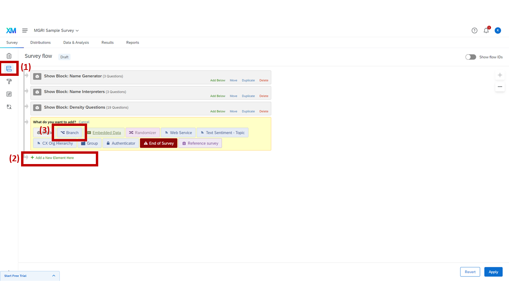
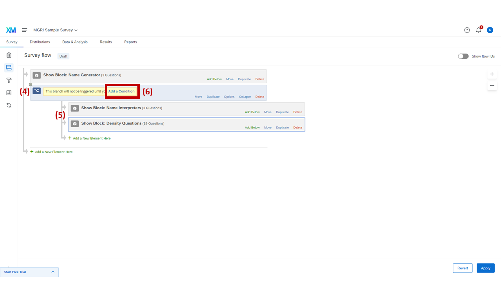
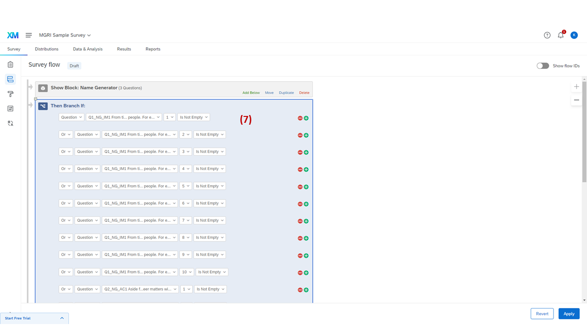
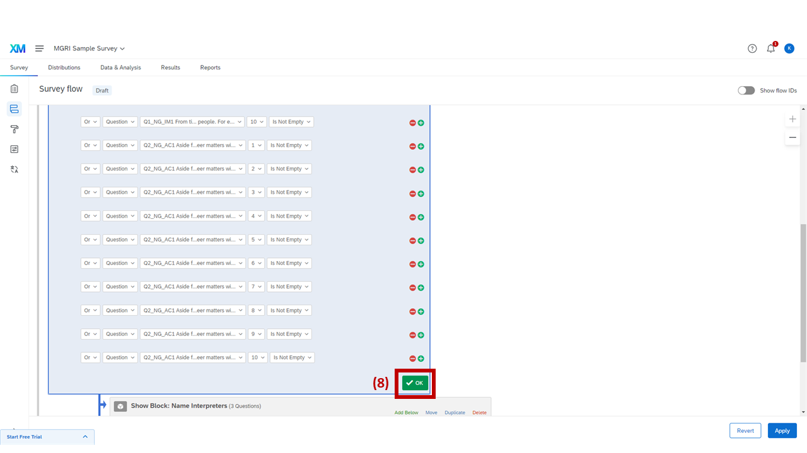

Implementing Survey in Qualtrics
Step 4: Creating Survey Proceeding Logic
Here, we're going to set up block branch logic. This logic is for making respondents who did not list any names in the two name generators skip the name interpreters and density questions.

Opening Survey Flow and adding a Branch element
1
Click "Survey Flow" (highlighted).
2
Click "Add a New Element Here."
3
Click "Branch."

Rearranging blocks under the Branch element
4
Move the created element to be under the "Name Generator" block.
5
Move "Name Interpreters" and "Density Questions" to be under the created element.
6
Click "Add a Condition."

Setting up the "Then Branch If" logic conditions
7
Add "Then Branch If" logic. Add logic as follows:
| Logic | Type | Name | Field Name | Condition Type |
|---|---|---|---|---|
| Or | Question | Q1_NG_IM1 |
1, 2, 3, … K | Is Not Empty |
| Or | Question | Q2_NG_AC1 |
1, 2, 3, … K | Is Not Empty |
This logic lets only the respondents who listed any name in the name generators see the name interpreters and density questions. Respondents who did not list any names in the IM or AC generators will not see any of the name interpreters and density questions.

Clicking Ok and Apply to save the branch logic
8